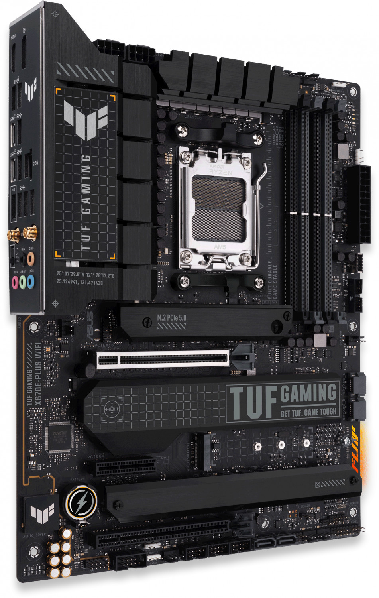
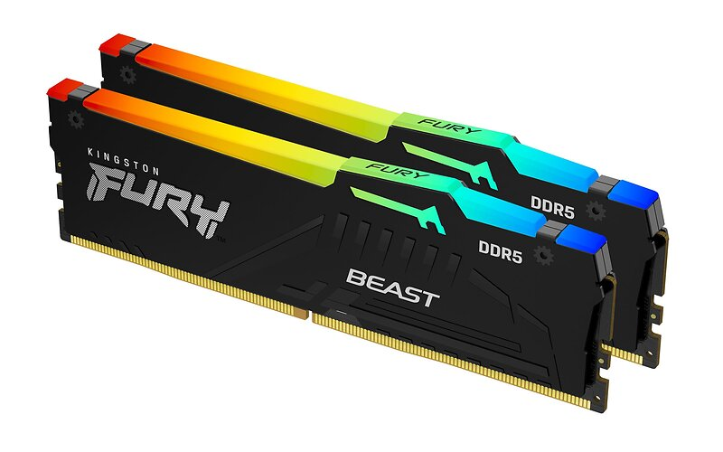
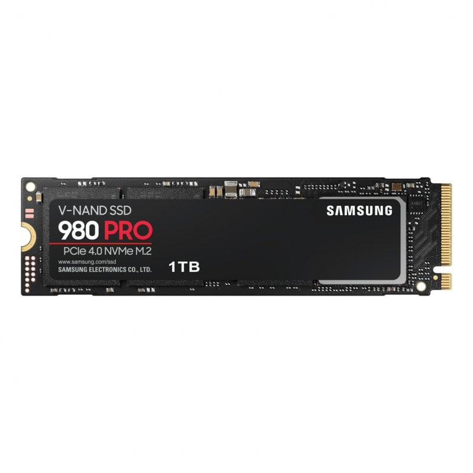

Emolevy on tietokoneen keskeinen komponentti, joka yhdistää kaikki muut osat toisiinsa. Se sisältää prosessorin, muistin ja laajennuspaikat.

Prosessori, eli CPU, on tietokoneen "aivot". Se suorittaa ohjelmakoodia ja käsittelee tietoa.

Muisti, kuten RAM, tallentaa tietoa tilapäisesti, jotta prosessori voi käyttää sitä nopeasti.

Kiintolevy, eli HDD tai SSD, tallentaa tietoa pysyvästi, kuten käyttöjärjestelmän, ohjelmat ja tiedostot.